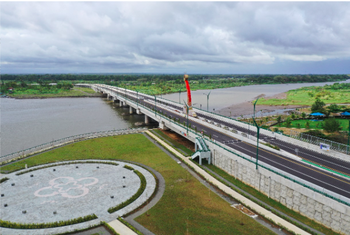

VISI
"Menjadi kementerian yang unggul dalam pengembangan infrastruktur dan perumahan berkelanjutan untuk Indonesia yang maju."
Bergerak Bersama untuk Indonesia yang Lebih Baik
Lanjutkan


VISI
"Menjadi kementerian yang unggul dalam pengembangan infrastruktur dan perumahan berkelanjutan untuk Indonesia yang maju."
MISI
1
Mendorong Pembangunan Infrastruktur yang Berkesinambungan
2
Menyediakan Akses Perumahan yang Layak
3
Optimalisasi Tata Ruang dan Sumber Daya Alam
4
Penguatan Kelembagaan dan Kapasitas SDM
5
Inovasi dan Pemanfaatan Teknologi
6
Peningkatan Kemitraan dan Koordinasi
TENTANG UPP DIY
Bidang Preservasi II Unit Pelaksanaan Peralatan DIY (Bidang Preservasi dan Peralatan) mempunyai tugas melaksanakan pengendalian dan pengawasan pelaksanaan preservasi jalan dan jembatan serta penyesuaian kontrak pekerjaan pereservasi jalan dan jembatan serta melaksanakan pengadaan, penyediaan, pemanfaatan, penyimpanan dan pemeliharaan bahan dan peralatan jalan dan jembatan.
TUGAS POKOK UPP DIY
1
Melaksanakan penyusunan rencana kegiatan pemeliharaan peralatan dan Alat Berat
2
Melaksanakan pemeliharaan peralatan dan Alat Berat
3
Melaksanakan perbaikan peralatan Alat Berat
4
Penyusunan laporan kegiatan dibidang tugasnya
5
Pelaksanaan tugas lain sesuai dengan perintah atasan
6
Pelaksanaan, dan pemeliharaan infrastruktur, serta peningkatan efisiensi dan efektivitas pelayanan

Pembangunan Jalan Tol Yogyakarta-Magelang Membuka Pintu Akses Lebih Lancar dan Ekonomi Berkembang di DIY
Proyek strategis ini, yang dimulai beberapa tahun yang lalu, sekarang semakin dekat dengan penyelesaian, dan masyarakat DIY sangat menantikan manfaatnya. Proyek jalan tol ini dirancang untuk menghubungkan Yogyakarta dengan Magelang, memotong waktu perjalanan dan meningkatkan aksesibilitas ke berbagai wilayah DIY dan sekitarnya.
Lihat Selengkapnya
27/04/2023
Progres Pembangunan Jalur Jalan Lintas Selatan (JJLS) Kelok 18 Kretek-Girijati Mencapai Tahap Pembersihan Ruas Jalan Penghubung

23/11/2023
Pemerintah DIY Keluarkan Izin Penetapan Lokasi untuk Jalan Tol Yogyakarta-Bandara YIA di Kulon Progo: Pengadaan Tanah Akan Dimulai

29/11/2023
Longsor di Jalan Jogja-Wonosari, Rekayasa Lalu lintas dan Kemacetan Terjadi

15/11/2023
Longsor Parah di Perbukitan Menoreh Kulon Progo, Akses Menuju Air Terjun Kedung Pedut Terputus
29/07/2023
Langkah Proaktif PJN DIY: Pemasangan Lampu Jalan Tambahan di Underpass Kentungan untuk Keamanan dan Kenyamanan Pengguna Jalan
27/04/2023
Banjir Genangi Jalan Nasional Wates-Purworejo, Kendaraan Menuju Bandara YIA Terdampak


Apabila ada saran dan masukan Sampaikan Pendapat Anda. Komentar dan Saran Selalu Kami Dengar.